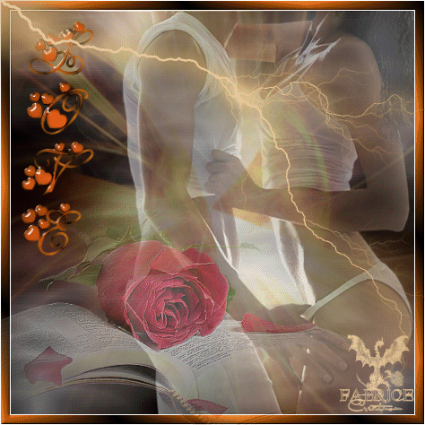
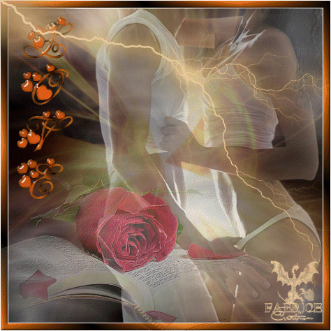
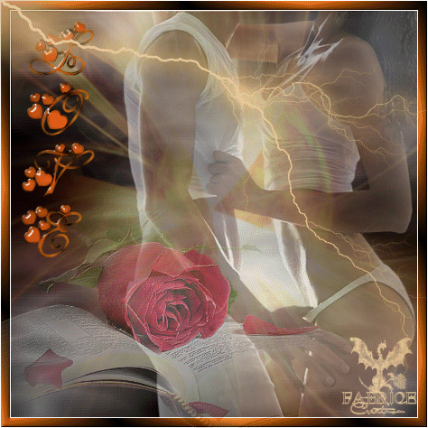

Made by
Seth Kranzler
THE SECOND DAY
The company rose at the customary hour
The Bishop, entirely recovered from his excess, and who, waking at four in the morning, was deeply shocked to find they had let him go to bed unaccompanied, had summoned Julie and his fucker for the night to come and occupy their posts
They answered the call instantly, and in their arms the libertine plunged back into the thick of new impurities
When, in keeping with regulations, breakfast had been taken in the girls' quarters, Durcet went on his rounds, and, notwithstanding all the arguments he heard, further delinquencies appeared to his eyes
Michette was guilty of one kind of fault and Augustine, whom Curval had ordered to keep herself throughout the day in a certain state, was found in the absolutely opposite state; she declared she had forgotten, made a hundred apologies, and promised it would not happen again, but the quadrumvirate was inexorable, and both names were inscribed on the list of punishments to be executed come the first Saturday
""
Highly dissatisfied with all these little girls' ineptness in the art of masturbation, annoyed by the effects of this awkwardness with which he had been obliged to put up the previous evening, Durcet proposed that one hour in the morning be set aside for giving them lessons, and that the friends take turns rising an hour early, the exercise period being set from nine until ten—one friend would rise at nine every morning, I say, to participate in the training
It was decided that the supervisor would be seated comfortably in a chair in the middle of the harem and that each little girl, led forth and guided by Duclos, the best frigger in the castle, would demonstrate upon the friend, would direct the little girl's hand, her motion, would explain the intricacies of tempo, how much and how little speed was required and how that depended on the patient's condition, would also explain what attitudes and postures were most conducive to the operation's success; furthermore, punishments were fixed for her who at the end of a fortnight, despite the lessons, should fail of perfect proficiency in this art
It was emphasized to the little girls that, pursuant to the good ecclesiastic's doctrines, the glans was to be kept uncovered at all times, and that the hand not in action was meanwhile continually to be employed exciting the adjacent areas, this in keeping with the particular fancy of the patient
The financier's proposal pleased everyone; Duclos was informed, she accepted her appointment, and that same day she set up a frigging dummy upon which, in their spare time, the little girls could exercise their wrists and maintain the necessary degrees of agility and suppleness
Hercule was given the same instructorship in the boys' chamber; they being, as always, more skilled in this technique than the girls, because in the case of boys it is merely a question of doing for
others what they do unto themselves, a week was ample time to turn them into the most delicious corps of friggers you could ever hope to meet with
On this particular morning, not one of them was found at fault, and Narcisse's behavior of the previous day having brought about the refusal of all permissions, the chapel was empty save for Duclos, a pair of fuckers, Julie, Thérèse, Cupidon, and Zelmire
Curval was stiff as a ramrod, Adonis had inspired an astonishingly high temperature in him when, that morning, he had visited the boys, and it was generally thought he would erupt while watching Thérèse and the two fuckers manage their affairs; but he kept a grip upon himself
The midday meal was the usual affair, but the Président, having drunk a singular amount and frolicked about even more while eating, became inflamed all over again when coffee was served by Augustine and Michette, Zélamir and Cupidon, directed by old Fanchon, whom out of whimsy they had commanded to be as naked as the children
From this contrast Curval's new lubricious furor was born, and he gave himself over to some choice extravagances at the expense of Zélamir and the duenna; this riotous conduct finally cost him his fuck
The Duc, pike aloft, closed in upon Augustine; he brayed, he swore, he waxed unreasonable, and the poor little thing, all atremble, retreated like a dove before the bird of prey ready to pounce upon it
He limited himself, however, to a few libertine kisses, and was content to give her an introductory lesson in advance of the ones she was to begin the following morning
The two others, less animated, having already started their naps, our two champions imitated them, and the quartet did not wake until six o'clock, the hour when the storytelling began in the throne room
All the previous day's quatrains had been altered with respect to both subjects and dress, and our friends had these couch companions: the Duc shared his niche with Aline, the Bishop's daughter and consequently his own niece; beside the Bishop lay his sister-in-law, Constance, the Duc's wife and Durcet's daughter; Durcet was with Julie, the Duc's daughter, the Président's wife; that he might be roused from sleep and roused to more, Curval had with him Adelaide, Durcet's wife, one of the creatures in this world it gave him the greatest pleasure to tease because of her virtue and her piety
He opened up with a few scurrile jests and low pranks, and having ordered her throughout the séance to maintain a posture that sorted well with his tastes, but which the poor woman found very tiresome to maintain, he threatened her with all his anger might produce were she to budge or give him a moment's inconvenience
Everything being ready, Duclos ascended the platform and resumed her narration in this wise:
Three days having elapsed since my mother had appeared at the house, her husband, far more uneasy about his belongings and his money than about her, took it into his head to enter her
"room, where it was their custom to hide their most precious possessions; and what was his astonishment when, instead of what he was seeking, he found nothing but a note, written by my mother, advising him to make the best of his loss because, having decided to leave him forever, and having no money of her own, she had been forced to take all she had been able to make off with"
As for the rest, he was to blame himself and his hard use of her for her departure and for her having left him with two daughters who were, however, certainly worth as much as and possibly more than what she had removed
But the old gaffer was far from judging equal what now he had and what he had just lost, and the dismissal he graciously gave us, together with the request we not even sleep in the house that night, was convincing evidence some discrepancy existed between his way of reckoning and my mother's
Not much afflicted by a compliment which gave us full liberty to launch forth unimpeded into the little mode of life that was beginning to please us so much, my sister and I thought only to collect our few belongings and to bid as swift a farewell to our dear stepfather as he had seen fit to bid us
Without the loss of a minute, we withdrew, and while waiting to decide how best to come to grips with our new destinies, we took lodgings in a small room in the neighborhood
Our first thoughts turned to what might be our mother's fate and whereabouts; we had not the least doubt but that she had gone to the monastery, having decided to live secretly with some father, or that she was being kept somewhere in the vicinity, and this was the opinion we held, without being unduly concerned, when a friar from the monastery brought us a note that bore out our conjectures
"The substance of the note was that we would be very well advised, immediately night had fallen, to come to the monastery and speak to the Father Superior, who was the note's author; he would wait for us in the church until ten o'clock and would lead us to the place presently occupied by our mother, whose actual happiness and peace he would gladly have us share"
He very energetically urged us not to fail to come, and above all to conceal our movements with all possible care; for it was essential our stepfather know nothing of what was being done in behalf of both our mother and ourselves
My sister, fifteen years old at the time and hence more clever and more reasonable than I, who was but nine, after having dismissed the bearer of the letter and given him the reply that she would ponder its contents, admitted she found all these maneuvers very peculiar indeed
"Françon," says she, "let's not go
There's something wrong with it
If this were an honest proposal, why wouldn't Mother have either added a few words or made some kind of sign
Father Adrien, her best friend, left there almost three years ago, and since then she's only dropped in at the monastery while passing by, and hasn't had any other regular intrigue there
"What would have led her to choose this place for hiding? The Father Superior isn't her lover and never has been"
I know, it's true she has amused him two or three times, but he's not the man to lose his
head over a woman for that slender reason: he's even more inconstant and brutal to women once his caprice is satisfied
And so why would he have taken such an interest in our mother? There's something queer about it, I tell you
I never liked that old Superior; he's wicked and harsh, and he's a brute
Once he got me into his room, there were three more of them there, and after what happened to me then I swore I'd never set foot in the place again
If you take my advice, you'll leave all those nasty monks alone
"There's no reason why I shouldn't tell you so now, Françon, I have an acquaintance, a good friend, I dare say; her name is Madame Guérin, I've been going to her place for the past two years, and in all that time not one week has gone by without her arranging something nice for me"
But none of those six-penny fucks like the ones at the monastery; I get at least three crowns from every one
Here, there's proof of it," my sister continued, showing me a purse containing more than ten louis, "you can see I'm able to make my own way in the world
Well, my advice to you is to do what I do
Guérin will take you on, I'm sure of it, she got a glimpse of you a week ago when she came to fetch me for a party, and she told me to make you a proposal, and she said that, young as you are, she'd always find some way of placing you
"Do like me, I tell you, and we'll be well off in no time"
Now, that's all I've got to say to you; I'll pay your expenses for tonight, but from then on don't count on me, little sister
"Each for himself in this world"
That's what I say
I've earned that money with my body and my fingers, do the same yourself
And if you have any qualms, go talk it over with the devil, but don't come looking for me; well, I've told what I think, and I'll tell you now that I'd sooner stick my tongue two feet out than give you even a glass of water for nothing
As for Mother, I don't care what's happened to her, as a matter of fact, even if it's the worst I'm perfectly delighted, and all I hope is that the whore is far enough away so I'll never see her again for the rest of my life
I know all the things she did to prevent me from getting anywhere in the trade, and all the while she was giving me that fine advice, the bitch was doing things three times worse
So, may the devil take her and above all not bring her back, that's all I care
"""
Not having, to tell you the truth, a heart more tender, nor a soul much more generous than my sister's, it was in all good faith I echoed the invectives wherewith she pilloried that excellent mother, and thanking my sister for the helpful words she promised to speak in my behalf, I in my turn promised to follow her to this woman's house and, once I had been adopted, to put an end to my reliance on her
As for refusing to go to the monastery, we were fully agreed
"If indeed she is happy, so much the better for her," I commented, "and in that case we can look out for our own welfare without having to go and submit to the same fate
And if it is a trap they're setting for us, we've got to avoid it
"
"Whereupon my sister embraced me"
""Splendid," said she, "I see you're a good girl"
Don't worry, we're going to make a fortune
I'm pretty, so are you; we'll earn as much as we want, my chit, but don't become attached to anyone, remember that
One today, another tomorrow, you've got to be a whore, a whore in body and soul
As for myself," she went on, "I'm one now, such as you see me, and there isn't any confessional, or priest, or counsel, or threat that could ruin things for me
By Jesus, I'd go show my ass on the sidewalk as calmly and coolly as I'd drink a glass of wine
"Imitate me, Françon, be amenable and you can get anything out of men; the trade's a little hard in the beginning, but you'll get along and things get better"
So many men, so many tastes
At first you've got to expect it, one of them wants one thing, another wants something else
But that doesn't matter, you're there to please and give them service; the customer is always right
It doesn't take long, and then the money's in your pocket
"
I admit I was amazed to hear such wild remarks from a girl so young, who had always seemed to me so decent
But as my heart beat in harmony with the spirits of what she said, I let her know at once that I was not only disposed to duplicate all her actions, but even prepared to go a great deal further if necessary
Delighted with me, she fell to embracing me again, and as it was growing late, we sent out for a chicken and some good wine and supped and slept together, having decided to present ourselves the very next morning at the establishment of Madame Guérin and to ask her to include us amongst her pensionnaires
It was during that supper my sister taught me all I still did not know about libertinage
She showed herself naked to me, and I can warrant that she was one of the prettiest creatures there was in Paris at the time: the fairest of skin, the most agreeable plumpness, yet the most supple and intriguing figure, the loveliest blue eyes, and all the rest correspondingly fine
I also learned for how long Guérin had been promoting her interests, and with what great pleasure she procured her clients who, never tired of her, asked for her constantly
No sooner were we in bed than it occurred to us we had managed very badly in failing to give the Father Superior a reply, for our negligence might annoy him, and while we remained in this quarter of town it was important to humor him at least
But what was to be done? Eleven o'clock had struck; we resolved to let things take their course
The adventure probably meant a great deal to the Superior, we supposed, and hence it was not difficult to surmise that he was laboring more in his own behalf than in that of the alleged happiness he had mentioned in his communication; at any rate, midnight had just sounded when we heard a soft knocking at our door
"It was the Superior himself; he had been waiting for us, said he, since two in the afternoon, we should at least have given him a response, and, seating"
himself at our bedside, he informed us that our mother had decided to spend the rest of her days in a little secret apartment they had at the monastery and in which she was having the world's most cheerful time, improved by the company of all the house's bigwigs who would drop in to spend half the day with her and with another young woman, our mother's companion; it was simply up to us to come and increase the number, but, in that we were a little too young to stay on permanently, he would only contract us to a three-year's stint, at the end of which he swore we would be granted our freedom and a thousand crowns apiece; he added that he had been charged by our mother to assure us that we would be doing her a great kindness were we to come to share her solitude
"Father," my sister said most imprudently, "we thank you for your proposal
But at our age we have no inclination to have ourselves locked up in a cloister in order to be whores for priests, we've had enough of that already
"
The Superior renewed his arguments, he spoke with a heat and energy which illustrated his powerful desire to have the thing succeed; finally observing that it was destined to fail, he hurled himself almost in a fury upon my sister
"Very well, little whore," he cried, "at least satisfy me once again before I take my leave
"
And unbuttoning his breeches, he got astride her; she offered no resistance, persuaded that by allowing him to have his way she'd be rid of him all the sooner
"And the smutty fellow, pinning her between his knees, began to brandish and then to abuse a tough and rather stout engine, advancing it to within a quarter of an inch of my sister's face"

""Pretty face," he gasped, "pretty little whore's face, how I'll soak it in my fuck, by sweet Jesus!""
And therewith the sluices opened, the sperm flew out, and the entirety of my sister's face, especially her nose and mouth, were covered with evidence of our visitor's libertinage, whose passion might not have been so cheaply satisfied had his design in coming to us met with success
More complacent now, the man of God's only thoughts were of escape; after having flung a crown upon the table and relit his lantern:
"You little fools, you are little tramps," he told us
"You are ruining your chances in this world; may Heaven punish your folly by causing you to fall on evil days, and may I have the pleasure of seeing you in misery; that would be my revenge, that is what I wish you
"
"My sister, busy wiping her face, paid him back his stupidities in kind, and, our door shutting behind the Superior, we spent the remainder of the night in peace"
"You've just seen one of his favorite stunts," said my sister
""He's mad about discharging in girls'"
faces
If he only confined himself to that… but the scoundrel has a good many other eccentricities, and some of them are so dangerous that I do indeed fear…"
But my sister was sleepy, she dozed off without completing her sentence, and the morrow bringing fresh adventures with it, we gave no more thought to that one
"We were up early; having prettied ourselves as much as possible, we set out for Madame Guérin's"
That heroine lived in the rue Soli, in a very neat ground-floor apartment she shared with six tall young ladies between the ages of sixteen and twenty-two, all in splendid health, all very pretty
But, Messieurs, you will be so kind as to allow me to postpone giving their descriptions until the proper moment in my story arrives
Delighted by the project which brought my sister to her for a long stay, Madame Guérin greeted us cordially and with the greatest pleasure showed us our rooms
"Young as you may find this child to be," my sister said as she introduced me, "she will serve you well, I guarantee it
She is mild-tempered, thoughtful, has a very good character, and the soul of a thoroughgoing whore
You must have a number of old lechers amongst your acquaintances who are fond of children; well this is just what they're looking for… put her to work
"
Turning in my direction, Guérin asked me if I was willing to undertake anything
""
"Yes, Madame," I answered with something of an indignant air, and it pleased her, "anything provided it pays
"""
We were introduced to our new companions, who already knew my sister very well and our of friendship for her promised to look after me
"We all sat down to dine together, and such, in a few words, Messieurs, was how I became installed in my first brothel"
"I was not to remain long unemployed; that same evening, an old businessman arrived wrapped up in a cloak; Guérin selected him for my first customer and arranged the match"
""
"Ah, this time," said she to the old libertine, leading me forth, "if it's still hairless you like them, Monsieur Duclos, you'll be delighted with the article, or your money back
Not a hair on her body
"
"Indeed," said the old original, peering down at me, "it looks like a child, yes indeed
How old are you, little one?"
""Nine, Monsieur"
"
"Nine years old! … Well, well! that's how I like them, Madame Guérin, that's how I like them, you know
I'd take them even younger if you had any around
Why, bless my soul, they're ready as soon as they're weaned
"
And laughing good-naturedly at his remarks, Guérin withdrew, leaving us alone together
Then the old libertine came up and kissed me upon the mouth two or three times
With one of his hands guiding mine, he had me pull from his fly a little device that could not have been more limp; continuing to act more or less in silence, he untied my skirts, lay me upon the couch with my blouse raised high upon my chest, mounted astride my thighs which he had separated as far as possible; with one hand he pried open my little cunt while the other put all his strength into manipulating his meager machine
"Ah, pretty little bird," he said as he agitated himself and emitted sighs of pleasure, "ah, how I'd tame you if I were still able to, but I can't anymore
There's no remedy for it, in four year's time this bugger of a prick will have ceased to get stiff
"Open up, open up, my dearest, spread your legs"
" And finally after fifteen minutes of struggle, I observed my man to sigh and pant with greater energy
A few oaths lent strength to his expression, and I felt the area surrounding my cunt inundated with the hot, scummy seed which the rascal, unable to shoot it inside, was attempting to tamp down with his fingertips
He had no sooner done so than he was gone like a flash of lightning, and I was still cleaning myself when my gallant passed out on the door and into the street
And so it was I came, Messieurs, to be named Duclos; the tradition in this house was for each girl to adopt the name of her firstcomer
I obeyed the custom
""
""One moment there," said the Duc"
"I delayed interrupting you until you came to a pause; you are at one now
Would you provide further information upon two matters: first, have you ever had any news of your mother, have you ever discovered what became of her?
Secondly, was there any cause for the antipathy you and your sister had for her, or would you say these feelings were naturally inculcate in you both? This relates to the problem of the human heart, and 'tis upon that we are concentrating our major efforts
"
""My Lord," Duclos replied, "neither my sister nor I have ever heard the slightest word from that woman"
"
"Excellent," said the Duc, "in that case it's all very clear, wouldn't you say so, Durcet?"
"Incontestably," answered the banker
"Not a shadow of a doubt, and you are very fortunate you did not put your foot in that one
Neither of you would ever have got out
"
"'Tis incredible," Curval commented, "what headway that mania has made with public
"
"Why, no; after all, there's nothing more delicious," the Bishop replied
""
"And the second point?" asked the Duc, addressing the storyteller
"As for the second point, my Lord, that is to say, as for the reason for our antipathy, I'm afraid I should be hard pressed to account for it, but it was so violent in our two hearts that we both made the avowal that we would in all probability and very easily have poisoned her had we not managed, as it turned out, to be rid of her by other means
Our aversion had reached the ultimate degree of intensity, and as nothing overt occurred to give rise to it, I should judge it most likely that this sentiment was inspired in us by Nature
"
"What doubt of it can there be?" said the Duc
"It happens every day that she implants the most violent inclination to commit what mortals call crimes, and had you poisoned her twenty times over, this act would never have been anything but the result of the penchant for crime Nature put in you, a penchant she wishes to draw your attention by endowing you with such a powerful hostility
It is madness to suppose one owes something to one's mother
"And upon what, then, would gratitude be based? is one to be thankful that she discharged when someone once fucked her? That would suffice, to be sure"
"As for myself, I see therein naught but grounds for hatred and scorn"
Does that mother of ours give us happiness in giving us life?… Hardly
She casts us into a world beset with dangers, and once in it, 'tis for us to manage as best we can
"I distinctly recall that, long ago, I had a mother who aroused in me much the same sentiments Duclos felt for hers: I abhorred her"
"As soon as I was in a position to do so, I dispatched her into the next world; may"
she roast there; never in my life have I tasted a keener delight than the one I knew when she closed her eyes for the last time
"
At this point dreadful sobs were heard to come from one of the quatrains
It proved to be the Duc's; upon closer examination it was discovered that young Sophie had burst into tears
Provided with a heart unlike those villains', their conversation had brought to mind the cherished memory of her who had given her life, and who had perished in an effort to protect her while she was being abducted; this cruel vision offered itself to her tender imagination, a flood of tears ensued
"Ah, by God, now!" said the Duc, "that's splendid
It's for mama you're crying, is it, my little snotface? Come here, come along, let me comfort you
"
"And the libertine, warmed by what had been happening, by these words of his, and by the effects they produced, displayed a thunderous prick which was apparently speeding toward a discharge"
"Marie, the quatrain's duenna, led the child forward all the same"
Her tears flowed abundantly down her cheeks, the novice's dress she was wearing that day seemed to lend yet more charm to the sorrow which embellished her looks: it was impossible for a creature to be lovelier
"By the Holy Bugger," quoth the Duc, springing up like one gone out of his mind, "what a pretty mouthful we have here
"I'm going to do what Duclos has just described… smear some fuck on her cunt… Undress her"
"
And everyone silently awaited the issue of this little skirmish
""Oh! my Lord, my Lord!" cried Sophie, casting herself at the Duc's feet, "at least respect my sorrow, I groan for my mother's fate, she was dear to me, she died defending me, I shall never see her again"
Have pity upon my tears, grant me this one evening of respite
"
"Why, fuck my eyes!" the Duc exclaimed, fondling his heaven-threatening prick, "I'd never have believed this scene could be so voluptuous
Off with her clothes, I tell you to take them off," he roared at Marie, "she should already be naked
"
And Aline, lying upon the Duc's couch, shed warm tears, so did Adelaide, who was heard to utter a moan in Curval's alcove; the latter, in no wise partaking of that lovely creature's grief, violently scolded his playmate for having shifted from the position he had commanded her to keep, and,
that done, turned an appreciative gaze upon the delicious scene whose outcome interested him exceedingly
Sophie's clothes are removed without the faintest regard for her feelings, she is placed in the posture Duclos has just described, the Duc announces that he is about to discharge
"But how is the thing to be done? What Duclos has just related had been performed by a man virtually incapable of an erection, and he had been able to direct his flabby prick's discharge wherever he wished"
Such was not the case here: the threatful head of the Duc's engine had not the least inclination to lower the awful stare whereby it seemed bent on cowing heaven; it appeared necessary, so to speak, to place the child on high
No one knew what to do, and the more obstacles were encountered, the more the enraged Duc fumed and blasphemed
"Desgranges finally came to the rescue; nothing that pertained to libertinage was unknown to that sage old dame"
She caught up the child and set her so skillfully upon her knees that, whatever the stance the Duc might adopt, the end of his prick was sure to nudge her vagina
Two servants came up to hold Sophie's legs, and had it been her deflowering hour, never might she have displayed the merchandise to better advantage
But there was yet more to attend to: a clever hand was needed to cause the torrent to leap its banks and to direct the flood fairly to its destination
"Blangis had no desire to entrust so important a matter to an untutored child"
"Take Julie," Durcet suggested, "she'll suit you; she's beginning to frig like an angel
"
"Bah," muttered the Duc, "I know the clumsy bitch
"And she knows her father"
No, she'd be panic-stricken, she'd fumble it
"
"Upon my soul, I do recommend a boy for the job," said Curval; "why not Hercule? His wrist is like a whip
"
"I won't have anyone but Duclos," the Duc answered, "she's the best of our friggers, allow her to quit her post for a moment or two
"
Duclos steps forward, beaming with pride to have been accorded so distinguished a preference
She rolls her sleeve to the elbow and grasps the nobleman's enormous instrument, she sets to rattling that spear, keeps the foreskin snapped broadly back, she moves it with such art, she agitates it by means of strokes so swift and simultaneously so perfectly attuned to the state she observes her patient to be in, that the bomb finally explodes upon the very hole it is to cover, inundating it
The Duc shrieks, swears, storms
Duclos is disconcerted not in the least, she gauges her movements by the degree of pleasure they produce
Antinos, properly situated for
this function, delicately works the sperm into the vagina as proportionally it flows from the spigot, and the Duc, vanquished by the most delicious sensations, dying from joy, sees grow gradually slack, between his frigger's fingers, that high-spirited, mettlesome member whose ardor has just been so powerfully communicated to the rest of himself
"He flings himself back upon his sofa, Duclos strides back to her throne, the child wipes herself, is consoled, and regains her quatrain, and the recital continues, leaving the spectators convinced of a truth wherewith, I believe, they have already been penetrated for a long time: that the idea of crime is able always to ignite the senses and lead us to lubricity"
I was greatly surprised, said Duclos, taking up the thread of her narrative, to see all my companions laugh when I returned, and ask me if I had wiped myself, and say a thousand other things which proved they knew perfectly well what had just happened
I was not long left in my quandary; leading me into a room adjacent to the one in which the parties ordinarily took place and in which a short while before I had been at work, my sister showed me a hole to see everything that transpired there
"She told me that the young ladies found it diverting to watch what men did to their colleagues; I could come and do some spying whenever I wished, provided there was not someone already at the hole"
For it not infrequently occurred, said she, that this respectable hole had a part in mysteries which would be disclosed to me later on
The week was not out before I took advantage of my opportunities: one morning someone came and asked for a girl named Rosalie, one of the most lovely blondes it were possible to behold; I was curious to see what was to be done to her
I hid myself and witnessed the following scene
""
The man with whom she had to cope was no older than twenty-six or thirty
Immediately she entered, he had her sit down on a very high stool used especially for this ceremony
"As soon as she was settled, he removed all her combs and hairpins and down all the way to the floor floated in a cloud the superb golden hair that adorned Rosalie's head"
"He drew a comb from his pocket, combed her hair, took handfuls of it, tangled it, kissed it, everything he did was accompanied by remarks praising the beauty of that hair in which he took such a keen and exclusive interest"
At last, from out of his trousers he pulled a smart little prick, already quite stiff, and he promptly enveloped it in his Dulcinea's hair; once well wrapped, he began to fondle his dart and discharged, at the same time passing his other arm around Rosalie's neck and applying his lips to her mouth
He extricated his defunct engine, I saw that my companion's hair was matted with glistening fuck; she cleaned it, put it up again, and our lovers separated
A month later, someone came in quest of my sister; this personage, I was told by the others, merited observing, for he had a most baroque specialty
He was a man of about fifty
Straightway he entered, without any preamble, without a caress, he exhibited his behind to my sister, who
knew her part to perfection; he has her take her place on the bed, he backs toward her, she seizes that flaccid and wrinkled old ass, drives her five fingers into the orifice, and begins to struggle and battle and worry it with such force the bed creaks
"Be that as it may, without bringing anything else to light, our man wriggles, twitches, follows my sister's movements, lends himself luxuriously to this fearful abuse, cries he is coming, comes, and affirms this is the greatest of all pleasures"
He had indeed taken a furious buffeting, my sister was in a sweat; but what mild stuff!
what lack of imagination!
Although the gentleman with whom I had to do not long afterward was hardly more difficult to satisfy, he at least seemed more voluptuous and, in my view, his mania had more of the libertine tincture
He was a heavy-set man of about forty-five, short, sturdy, but energetic and hearty
""
Never having met a person with his predilection, my first act, as soon as we were alone together, was to hoist my skirts to the navel: a dog confronted by a hickory stick could not have looked more unhappy: "Good God, dearie, let's not have any of your cunt, please put it away
" So saying, he snatched down my skirts even more hastily than I had raised them
""These poor little whores," he mumbled, screwing up his face in a pout, "never have anything but cunts to show you"
I may not be able to discharge this evening, thanks to that exhibition… unless I can succeed in getting the accursed image of that cunt out of my head
"" Whereupon he turned me about and methodically raised my petticoats from behind"
"Guiding me himself, and keeping my skirts raised at all times, he moved me about in order to observe how my buttocks bounced when I walked, and then he had me approach the bed, upon which he had me lie belly down"
Next, with the most scrupulous attention he examined my ass, with one hand screening his eyes to avoid any glimpse of my cunt whereof, it appeared, he was in mortal terror
At last, having warned me to do all in my power to conceal that unworthy (I employ his expression) part from his sight, he brought both hands to bear on my ass and manipulated it lewdly and at length: he opened it, he closed it again, spread and squeezed it, sometimes he applied his mouth to it, and once or twice I even felt him press his lips to the hole; but he still had not touched himself, nothing could be discerned
None the less, he must have felt hidden pressures mount and readied himself for the denouement of his little ritual
""Lie down," he told me, tossing a few pillows on the floor, "yes, down there, that's it, that will do… with your legs well spread, the ass a shade higher, and the hole stretched as wide open as it will go; come now, wider still," he continued, noticing my docility"
And then, taking a stool and placing it between my legs, he sat down in such a way that his prick, which he now dragged from his breeches and began to vibrate, was as it were at a level with the hole upon which he was to offer a libation
His movements now grew more rapid, with one hand he frigged himself, with the other he separated my buttocks, and a few adulatory commendations seasoned with a quantity of hard language constituted his speech
"Ah, bugger the Almighty, here 'tis, the lovely ass," he cried, "the sweet little hole, and how I'm going to wet it
" He kept his word
"I felt"
myself soaked; his ecstasy seemed to annihilate the libertine
Ah, how true it is that the homage rendered at this temple is always more ardent than the incense which is burned at the other; and my worshipper left after promising to return to see me again, for he averred I satisfied his desires very well
He did indeed come back the next day, but was untrue to me, his inconstancy led him to my sister's asshole; I observed them, saw everything: every aspect of the rite was absolutely the same, and my sister lent herself to it with the same good will
""
"Did your sister have a handsome ass?" Durcet inquired
""
"You may judge by one fact, my Lord," Duclos replied
"A famous painter commissioned to do a Venus with a magnificent behind asked her the following year to be his model after having, he said, consulted every procuress in Paris without finding anything to equal her
"
"Well now, since she was fifteen and since we have a few girls of the same age here, compare her ass," the financier continued, "with some of the asses you see in this room
"
Duclos' eyes came to rest upon Zelmire, and she told Durcet that it would be impossible, not only with respect to the ass, but even with respect to the face, to find anyone who bore a closer resemblance to her sister
""
"In that case," said Durcet, "come here, Zelmire, present your cheeks
"
She did indeed belong to his quatrain; the charming girl approached all atremble
She was placed at the foot of the couch, made to lie upon her belly, her rump was raised by means of cushions, the little hole was in plain sight
"The lecher's prick begins to rise, he falls to kissing and fondling what lies under his nose"
He orders Julie to frig him, she sets to work, his hands stray hither and yon, snatching at divers objects, lust heats his brain, under Julie's voluptuous treatment his little prick looks as if it were about to stiffen, the lecher swears, the fuck flows, and the bell sounds for dinner
As the same profusion reigned at every meal, to have described one is to have described them all; but as almost everyone had discharged, there was a general need to recuperate strength, and therefore the friends drank a great deal at this supper
Zelmire, to whom they gave the sobriquet of Duclos' sister, was to an uncommon degree regaled during the subsequent orgies, and everyone simply had to kiss her ass
The Bishop left a puddle of fuck thereon, the three others restiffened over it, and they went to bed as they had the night before, that is to say, each with the
wife he had had upon his couch, and with one of the four fuckers who had not appeared since the midday meal


 
